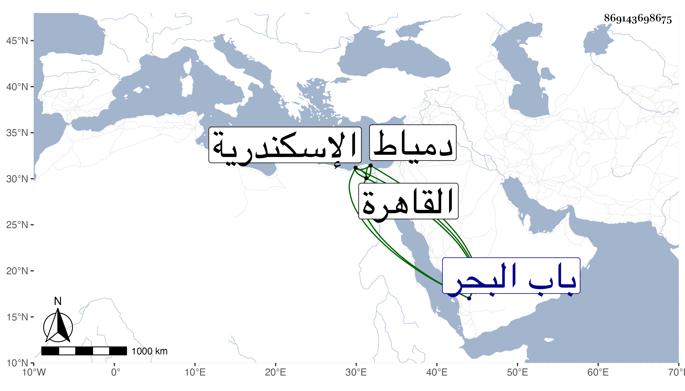

0902Sakhawi.DawLamic.ITO20230111-ara1.EIS1600.869143698675
Biography ID: 869143698675
761
خليل بن فرج بن برقوق الغرس بن الناصر بن الظاهر . ولد بالقاهرة في سنة أربع عشرة تقريبا وأمه أم ولد . دام بالقاهرة إلى أن ملك المؤيد شيخ فأرسله هو وأخوه محمد إلى اسكندرية فحبسا بها فأما محمد فمات بالطاعون في سنة ثلاث وثلاثين وأما صاحب الترجمة فبقي في محبسه مدة ثم أطلق وأذن له الأشرف بالسكنى بها وأن لا يركب إلا لصلاة الجمعة على فرس من خيول نائبها واستمر إلى أن رسم له الظاهر بالركوب والنزول وارساله فرسا بقماش ذهب ، ثم تكلم فيه عند السلطان بعض مماليكه بما اقتضى أخذ الخليل ومنعه من الخروج من باب البحر أحد أبواب اسكندرية ، وذلك في سنة اثنتين وخمسين وصار يركب في المدينة خاصة ثم أذن له في سنة خمس وخمسين في الخروج من الباب المذكور وأنعم عليه بفرس بقماش ذهب ، ولم يلبث أن رسم له بالحج في السنة التي تليها فحضر إلى القاهرة في نصف شوال فنزل عند أخته خوند شقرا زوجة جرباش المحمدي كرد أحد المقدمين حينئذ وطلع إلى السلطان بالقلعة فقام إليه واعتنقه وبالغ في إكرامه حتى إنه أجلسه فوقه ، ثم نزل فأقام ببيت أخته إلى أن سافر للحج ، وكنت هناك فرأيته بل كنت أحيانا أراه بالدرب ، ولما عاد كان الظاهر قد خلع نفسه في مرضه ، واستقر ولده المنصور فطلع إليه فألبسه كاملية بمقلب سمور ثم عاد الظاهر في مرضه ثم نزل إلى تربة أبيه الناصر فرج بالصحراء وتوجه منها امتثالا للأمر إلى ثغر دمياط في يومه فأقام به حتى مات في جمادى الأولى سنة ثمان وخمسين ، ودفن عند الشيخ فتح الأسمر ثمانية أيام ثم نقل إلى القاهرة فدفن بتربة والده في القبة التي تجاه قبة جده الظاهر برقوق ، وذلك في جمادى الثانية ، وكان فيما قال يوسف بن تغري بردى أخضر اللون إلى الطول أقرب نحيف البدن أسود اللحية عنده تمعقل ودهاء ومعرفة مع كبر وجبروت واسراف على نفسه وانهماك في اللذات عفا الله عنه .
